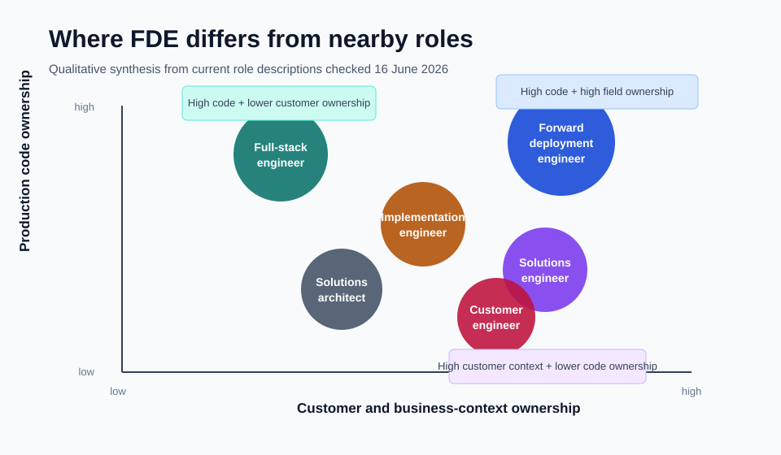

Forward Deployment Engineer vs Full-Stack Engineer and Similar Roles¶
A forward deployment engineer is different from a full-stack engineer because the FDE owns the path from an ambiguous customer or business problem to a working production outcome. A full-stack engineer owns more of the application stack: frontend, backend, database access, APIs, and sometimes deployment plumbing. The overlap is real, but the center of gravity is different.
The simple distinction is this: full-stack engineering is breadth across code layers. Forward deployment engineering is ownership across the operating boundary.
Another distinction is employment and incentive alignment. In the stricter definition, an FDE is a product-company engineer embedded with a client to deploy, customize, and co-evolve the company's technology. That makes the role different from a contractor or consultant: the FDE should be able to feed field patterns back into the roadmap and improve the platform, not only complete a client engagement.
That boundary is where the confusion starts. A strong full-stack engineer can build the UI, API, database model, and backend logic for a product. A strong FDE may also build all of those things, but the job starts earlier and ends later. The FDE has to find the real workflow, prove the data is safe enough, shape the smallest useful system, deploy it into the customer's environment, watch whether users trust it, and feed repeated field patterns back into the product or platform.

The shortest difference¶
The shortest way to separate the roles is to ask what each role is expected to protect.
| Role | What the role protects |
|---|---|
| Forward deployment engineer | The customer outcome across discovery, data, code, deployment, adoption, and field feedback. |
| Full-stack engineer | The application path across frontend, backend, database, API, and user-facing behavior. |
| Software engineer | A feature, service, component, platform capability, or product system inside an engineering roadmap. |
| Solutions engineer | The technical sale: demos, proof, architecture confidence, and buyer consensus. |
| Solutions architect | The technical design: architecture, cloud fit, cost, reliability, integration, and implementation direction. |
| Customer engineer | The technical customer relationship: advisory work, demos, cloud architecture, technical blockers, and adoption planning. |
| Implementation engineer | The configured or integrated customer deployment after a sale or delivery decision. |
| Consultant | The engagement outcome, which may include discovery, recommendations, implementation, change management, or delivery governance. |
| AI engineer | The AI system path: model integration, retrieval, agents, evals, guardrails, latency, cost, and reliability. |
| Product engineer | The product user outcome inside the product surface, usually for many users rather than one customer environment. |
The FDE is closest to full-stack engineering when the customer problem requires a custom app, workflow tool, integration layer, or AI-powered internal system. The FDE is closest to solutions engineering when the work happens before or during enterprise evaluation. The FDE is closest to implementation engineering when the problem is mostly configuration, integration, migration, and go-live.
The title alone does not settle it. The real test is the operating contract: who finds the requirement, who writes the production code, who owns the customer environment, who supports go-live, and who turns what was learned into reusable product capability?
That operating contract exists because neither side of the traditional market tradeoff is enough on its own. A generic SaaS product may scale but miss the client's actual workflow. A consulting engagement may fit the workflow but fail to become reusable software. FDE tries to bridge that gap by keeping the engineer close to both the customer environment and the product organization.
FDE vs full-stack engineer¶
A full-stack engineer can build across the application. That usually means the user interface, backend service, API layer, business logic, database model, authentication flow, and sometimes deployment pipeline. Full-stack development is powerful because one engineer can reason across the visible product and the server-side behavior behind it.
An FDE may need full-stack ability, but full-stack ability is not the whole job. The FDE has to know why the application should exist, which business decision it changes, whether the data can be trusted, where the system must run, who will use it, how it will be supported, and what the customer team will do when the output is wrong.
The difference is easiest to see in a real example.
A full-stack engineer might receive a scoped ticket:
- build a React interface for exception review
- add an API endpoint that returns prioritized exceptions
- store reviewer decisions in the database
- add tests and deploy through the existing pipeline
An FDE might receive a vague request:
- operations wants a way to know which shipment exceptions need action before the daily plan locks
That second request is not ready for ordinary implementation. The FDE has to find the decision owner, trace the exception workflow, inspect the source tables, check whether identifiers match across systems, learn which manual overrides matter, build the tool or service, deploy it with the right access, and watch whether planners actually trust the ranking.
The FDE may still write full-stack code. The difference is that the code is only one layer of the responsibility.
Putting engineers next to users changes the quality of the product signal. Instead of translating customer needs through layers of sales notes, handoff documents, and assumptions, the FDE sees the operating problem directly, builds against it, and turns repeated field patterns into reusable product capability.
FDE vs software engineer¶
A software engineer usually works inside a product or platform roadmap. The work may be frontend, backend, infrastructure, data, reliability, security, or machine learning. The team may have product managers, designers, tech leads, engineering managers, and support channels around the work.
An FDE works closer to the field problem. The FDE may not receive a clean product requirement. The customer context may be messy. The data contract may be undocumented. The deployment environment may be constrained by permissions, network boundaries, procurement, security review, or legacy systems.
The software engineer's question is often:
- How do we build this feature correctly inside the product?
The FDE's question is often:
- What should be built so this customer workflow works under real operating conditions?
That does not make FDE more technical than software engineering. It changes the technical shape. A conventional software engineer may go deeper on architecture, scale, performance, platform internals, or code quality inside one system. An FDE may go wider across business discovery, data diagnosis, integration, customer infrastructure, production rollout, and feedback into product.
The stronger role depends on the problem. A core database engine, distributed system, compiler, payment platform, or high-scale product service needs deep software engineering. A messy enterprise deployment where the product only creates value after it touches local workflow, local data, and local trust may need FDE ownership.
FDE vs solutions engineer or sales engineer¶
Solutions engineers and sales engineers usually live near the commercial cycle. They help buyers understand whether a product can solve their problem. They run demos, answer architecture questions, configure proof-of-concept environments, explain technical tradeoffs, and help sales teams reach a technical win.
The overlap with FDE is customer proximity. Both roles need strong technical communication. Both roles translate business pain into technical shape. Both roles may run prototypes or demos.
The difference is what happens when the buyer says yes.
A solutions engineer proves the product can work. An FDE makes the system work inside the real customer environment.
That line can blur in startups. A single person may demo the product, scope the workflow, write integration code, handle deployment, debug customer data, and feed patterns back to engineering. But as the company matures, the distinction matters. Pre-sales technical proof is not the same as production ownership.
That is why the FDE model is closer to embedded product discovery than sales-led requirements gathering. The customer work is not only a way to win or retain an account. It is a way to find product truth from inside the operating environment, where risks and opportunities are changing in real time.
If the role is mostly demos, objection handling, buyer workshops, and technical sales strategy, it is closer to solutions engineering. If the role is mostly production code, customer embedding, go-live, data reality, and field learning, it is closer to FDE.
In a stronger field model, solutions work, deployment strategy, and FDE work are not collapsed into one vague customer-facing title. An Echo-style role can own the domain narrative, stakeholder alignment, and first valuable use case, while a Delta-style FDE owns the technical path that proves the outcome. The boundary matters because customer desire and production proof are different jobs.
FDE vs solutions architect¶
A solutions architect designs the shape of a technical solution. In cloud contexts, that often means choosing services, mapping requirements to architecture, balancing cost and performance, explaining tradeoffs, and creating a design that teams can implement.
Solutions architecture can be highly technical, but it does not always require the architect to write production code. Some solutions architects stay close to implementation. Others produce reference architectures, cloud designs, migration plans, security patterns, or advisory material.
The FDE is judged more directly by whether the deployed system works in the field. The FDE may do architecture, but architecture is not enough. The FDE also has to close the loop through build, integration, deployment, adoption, support, and product feedback.
The practical distinction:
- a solutions architect designs the route
- a full-stack engineer builds the application path
- an FDE carries the route through the customer's operating terrain
FDE vs customer engineer¶
Customer engineer is one of the closest titles to FDE, especially in cloud and AI companies. A customer engineer may work with technical sales teams, act as a trusted technical advisor, run proofs of concept, troubleshoot technical roadblocks, design cloud solutions, and help customers understand the platform.
The difference is usually the balance between technical selling, architecture, and production build ownership.
If the role is measured by technical wins, cloud adoption, demos, workshops, and account expansion, it is closer to customer engineering. If the role is measured by production systems shipped inside customer workflows, it is closer to FDE.
Some companies use customer engineer for work that looks very close to FDE.
That is why titles are weaker than role descriptions. Look for the verbs:
demo, architect, advise, troubleshoot, implement, ship, deploy,
own, measure adoption, and feed product roadmap.
FDE vs implementation engineer¶
Implementation engineers work near deployment and go-live. They configure software, integrate customer systems, migrate data, troubleshoot setup issues, document workflows, test customer environments, and help the customer start using the product.
This is close to FDE when the implementation requires serious engineering judgment. The gap appears when the work is mostly predefined configuration.
An implementation engineer may be handed a signed customer, a known product, a deployment checklist, and a configuration pattern. An FDE may have to discover the actual operating problem, decide what should be built, write the missing software path, and send reusable learning back to the product team.
Implementation engineering is not weak work. It can involve production debugging, real customer systems, messy data, and high-pressure launch windows. The difference is whether the role is mainly deploying an existing product or creating the technical path that makes the product useful for that environment.
FDE vs consultant¶
Consulting is broad. A consultant may diagnose a business problem, recommend a strategy, manage a delivery program, configure enterprise software, write code, train users, or run change management.
FDE overlaps with consulting because both can involve ambiguous client problems and direct stakeholder work. The difference is engineering ownership.
If the work ends in recommendations, roadmaps, workshops, slide decks, or handoff documents, it is not FDE. If the work includes production code, customer data, deployment, support, and product feedback, it moves closer to FDE.
The weak version of FDE is just consulting with a more attractive title. The strong version is engineering-first field work where the person has enough technical ownership to build and harden the system, not only advise around it.
FDE vs AI engineer¶
AI engineers build systems that use machine learning models, LLM APIs, retrieval pipelines, agents, evals, guardrails, monitoring, and model integration patterns. The center of the role is the AI system.
FDEs in AI-heavy companies may do that work too. Current AI-era FDE role descriptions often mention production LLM applications, eval-driven feedback, agent workflows, customer infrastructure, model behavior, deployment support, and product feedback.
The difference is that an AI engineer can work entirely inside a product team or platform team. An FDE uses AI engineering as one part of the customer outcome. If the real blocker is user workflow, source data, enterprise access, latency, model trust, or deployment politics, the FDE has to handle those layers too.
An AI engineer asks:
- How do we build a reliable AI system?
An AI FDE asks:
- How do we make this AI system useful and supportable inside this customer's actual workflow?
FDE vs product engineer¶
A product engineer builds product features with strong attention to user experience, product behavior, speed of iteration, and measurable user value. This role can look close to FDE because both care about the problem, not only the code.
The difference is the user context. Product engineers usually build for a product surface that should serve many users or many customers. FDEs often work inside a specific customer environment first, then identify what should become reusable product capability.
Product engineering starts from the product. FDE starts from the field.
The best FDE work eventually becomes product engineering input. Repeated customer deployment pain may become a connector, workflow primitive, permission model, observability feature, admin tool, or platform abstraction.
FDE vs data scientist, data engineer, or ML engineer¶
Data scientists, data engineers, and ML engineers can all overlap with FDE. The overlap appears when the customer problem depends on messy data, prediction logic, analytics, model behavior, or production data pipelines.
The distinction is the endpoint.
A data scientist may produce analysis, experiments, forecasts, or models. A data engineer may build the pipeline and data platform path. An ML engineer may productionize model training, serving, monitoring, and evaluation. An FDE may need enough of all three to make the customer workflow change.
For example, a demand forecast is not an FDE outcome by itself. The FDE outcome is a planning workflow where the forecast reaches the right user, at the right time, with the right fallback behavior, trust signal, access control, monitoring, and support owner.
FDE vs deployment strategist¶
Deployment strategist is closely associated with the same field-oriented tradition as FDE, but it often leans more toward problem framing, stakeholder alignment, operational strategy, and deployment leadership. In some companies, the deployment strategist and FDE work as a pair: one owns more of the customer problem and operating change, while the other owns more of the software path.
The exact split depends on the company. The useful distinction is simple:
- if the role mostly frames the problem and drives adoption, it is closer to deployment strategy
- if the role writes or directly shapes the production system, it is closer to FDE
In strong deployments, both kinds of work matter. A technically correct system can fail if the operating change is mishandled. A strong deployment strategy can also fail if the software path is brittle.
Similar roles to forward deployment engineer¶
The roles most similar to FDE are:
- forward deployed software engineer
- customer engineer
- solutions engineer
- sales engineer
- implementation engineer
- professional services engineer
- technical consultant
- solutions architect
- deployment strategist
- product engineer
- AI engineer
- applied AI engineer
- ML solutions engineer
- field engineer
- developer advocate with implementation ownership
The closest match depends on which part of the FDE job is strongest.
| If the job emphasizes... | It may resemble... |
|---|---|
| Production code in customer environments | Full-stack engineer, software engineer, implementation engineer |
| Technical demos and buyer confidence | Solutions engineer, sales engineer, customer engineer |
| Cloud architecture and design | Solutions architect, cloud architect, customer engineer |
| AI workflows and model behavior | AI engineer, applied AI engineer, ML solutions engineer |
| Customer rollout and adoption | Implementation engineer, customer success engineer, deployment strategist |
| Business problem framing | Consultant, business analyst, product manager, deployment strategist |
| Reusable product feedback | Product engineer, product manager, platform engineer |
The best comparison is not title-to-title. It is responsibility-to-responsibility.
The practical test¶
Use five questions to tell whether a role is really FDE or only adjacent to FDE.
First, where does the work start? If it starts with a clean ticket, it is more like software or full-stack engineering. If it starts with a messy customer problem, it is closer to FDE.
Second, where does the work end? If it ends at a demo, design, recommendation, or handoff, it is not full FDE. If it ends after production rollout, adoption, support, and feedback, it is closer.
Third, who owns the data reality? If someone else validates source data, lineage, joins, freshness, and failure modes, the role is narrower than FDE.
Fourth, who writes or directly shapes the production software? If the person only advises, sells, or configures, the role may be valuable but it is not engineering-first FDE.
Fifth, does field learning return to the product? If every customer deployment becomes a private one-off, the company is doing custom services. If repeated patterns become product capability, platform abstraction, deployment tooling, or engineering knowledge, the work is closer to strong FDE.
What this means for someone coming from full-stack engineering¶
A full-stack engineer is already close to the implementation part of FDE. The missing layer is usually not another framework. The missing layer is field ownership.
To move toward FDE, a full-stack engineer has to prove they can:
- turn vague business language into a buildable workflow requirement
- inspect real data before trusting the system
- build across the UI, API, backend, integration, and deployment path
- explain tradeoffs to non-engineers without hiding technical risk
- deploy with permissions, secrets, logs, monitoring, and support handled
- learn from user behavior after go-live
- turn repeated customer problems into reusable product ideas
That is why FDE can sound like full-stack engineering but is not the same thing. Full-stack is the application range. FDE is the operating range.
For the full role definition, the deeper page on the job of a forward deployment engineer covers the ownership model in detail. For the capability breakdown, the forward deployment engineer skills page separates business discovery, data diagnosis, software implementation, deployment, AI evaluation, and product judgment.
The practical distinction is this: a full-stack engineer can build the system across the stack; a forward deployment engineer has to make the system work across the customer's reality. When the business workflow, data assumptions, software path, deployment environment, user trust, and product feedback all have to hold together, the role has moved beyond full-stack engineering and into forward deployment engineering.